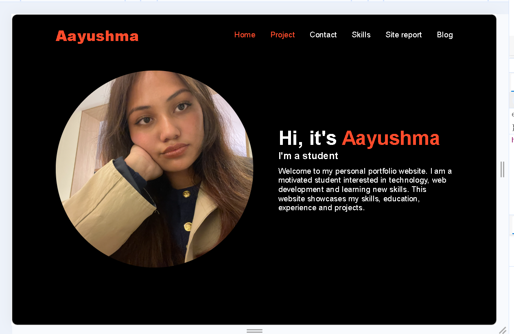
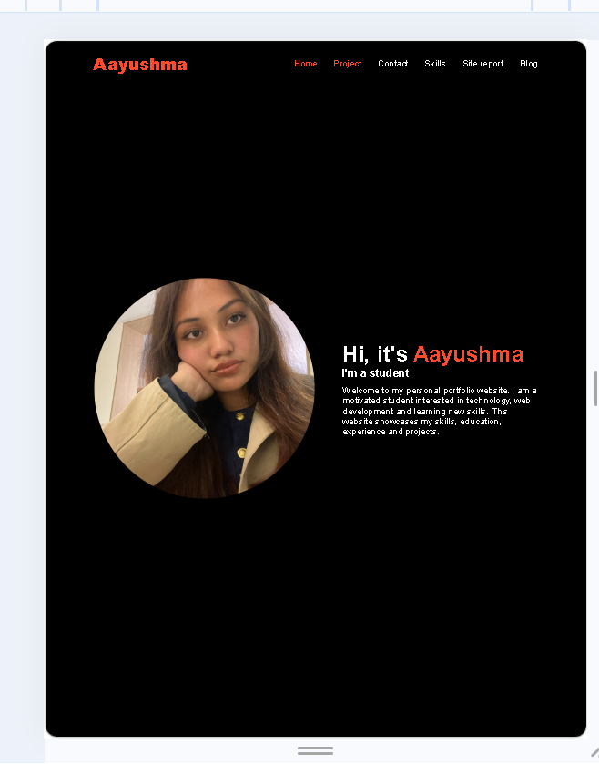
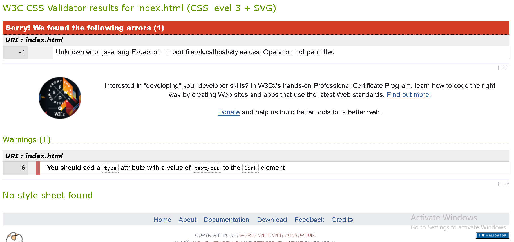
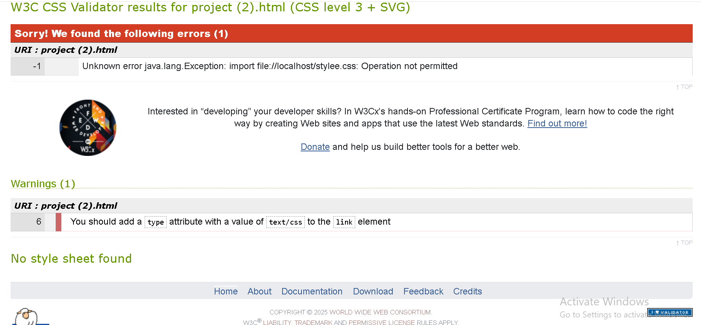
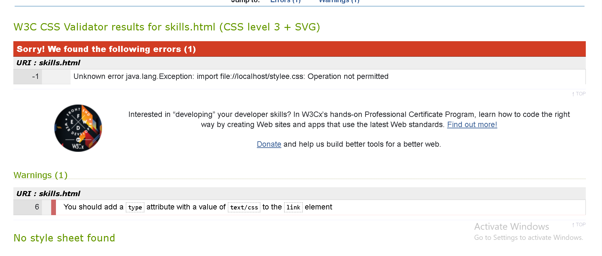
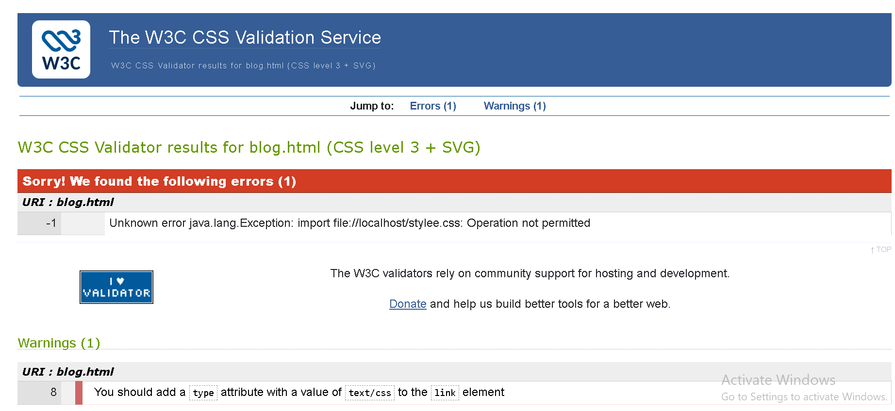
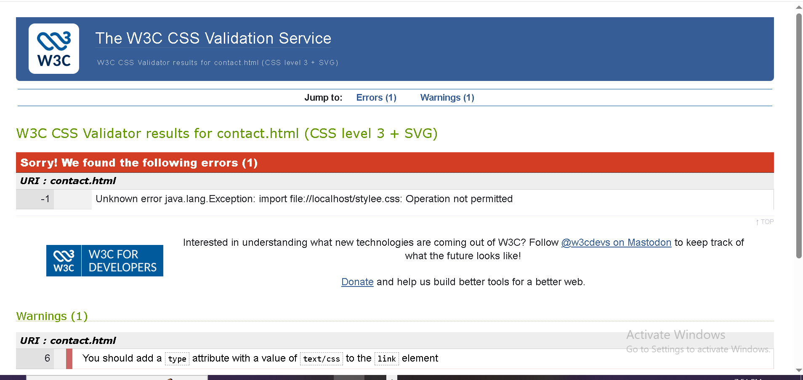
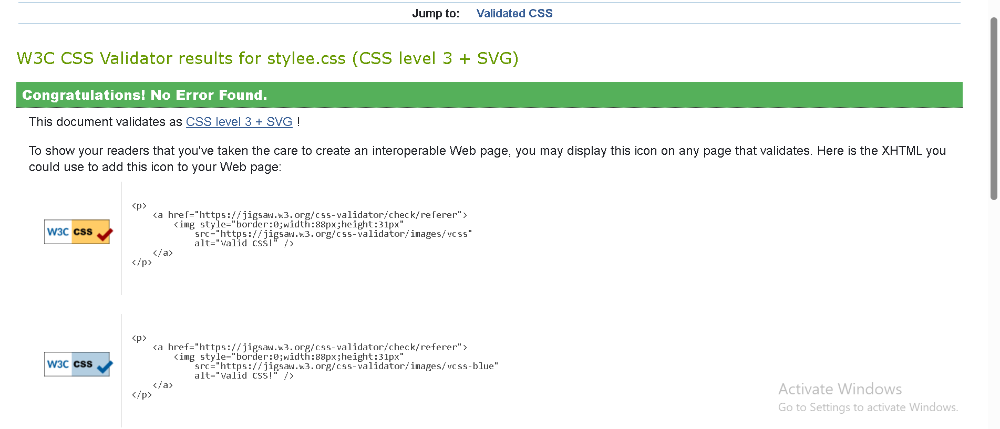

My Web Development Experience
At the beginning of this module, I only had a basic understanding of HTML and CSS. I knew that HTML was used to create the structure of a webpage and CSS was used to make it look better, but I was not very confident about creating a complete website. When I first started working on my portfolio, I found it interesting to see how a few lines of code could create an actual webpage.
I started by learning the basic HTML structure and gradually
created different pages for my portfolio. These included the
home page, project page, skills page, contact page, blog page
and this site report page. I learned how to use headings,
paragraphs, images, links, lists, tables and forms. I also
learned the importance of using correct semantic HTML tags.
For example, I used the nav element for
the navigation menu instead of using a normal div.
While developing the website, I learned that web development is not always straightforward. Sometimes a small mistake in the code caused a section of my website to look completely different from what I expected. However, solving these problems helped me understand HTML and CSS better.
Development of My Website
I developed my website step by step rather than trying to complete everything at once. I first created the basic page structure and then added the navigation menu. After that, I created the individual pages and connected them using links. I also used one CSS file to keep the overall design consistent throughout the website.
One of the things I focused on was making sure that users could easily move from one page to another. I therefore kept the navigation menu consistent across the pages. This made the website easier to use and also gave it a more organised look.
Design Decisions
For the design of my portfolio, I wanted to keep the interface simple, clean and easy to understand. I chose a readable sans-serif font because I wanted the text to be comfortable to read. I also used a consistent colour scheme so that the pages would look like they belonged to the same website.
I paid attention to spacing, headings, navigation, images and the overall layout of each page. I looked at different portfolio websites online for inspiration, especially their navigation, page structure, spacing and use of colours. These websites helped me understand how a portfolio could be designed, but I created my own layout and content rather than directly copying another website.
Problems and Debugging
The debugging process was one of the most challenging parts of this module. I experienced problems such as images not displaying, CSS not applying correctly and links not working as expected. Sometimes the problem was caused by something very small, such as an incorrect filename or file path.
Instead of starting the whole website again, I learned to check the code carefully and find where the problem was. I checked my file names, folder structure, CSS links and HTML tags. Fixing these problems helped me understand that debugging is an important part of web development.
GitHub was also difficult for me at first. I was initially confused about repositories, commits and pushing files. After practising, I became more comfortable with GitHub and understood how regular commits can be used to record the progress of a project.
Responsive Design
I also learned that a website should work properly on different screen sizes. A layout that looks good on a laptop may not always look good on a mobile phone, so I tested my website at different screen sizes. I adjusted the layout, spacing, images and navigation where necessary so that the content remained readable and usable on smaller screens.
Desktop / Laptop View

Mobile Phone View

HTML Validation
I used the W3C HTML Validator to check my webpages. This helped me identify mistakes in my HTML and correct them. I checked each page and included screenshots of the validation results as evidence.
Index Page HTML Validation

Project Page HTML Validation

Skills Page HTML Validation

Blog Page HTML Validation

Contact Page HTML Validation

Site Report HTML Validation

CSS Validation
I also used the W3C CSS Validator to check my stylesheet. The validation process helped me find and correct errors in my CSS code. The screenshot below shows my CSS validation result.

GitHub Development
I used GitHub to store my website files and keep track of my development progress. I made regular commits when I added new pages, changed the CSS and fixed problems. At first, GitHub was confusing, but I gradually understood how commits and pushing changes work. This helped me see the importance of keeping a record of the development process instead of only uploading the finished website.

Video Demonstration
I created a video demonstration of my portfolio website showing the different pages and features.
View My Website Demonstration on YouTubeReflective Discussion
Overall, this module has taught me much more than just how to write HTML and CSS. I learned that creating a website involves planning, designing, coding, testing and debugging. There were times when I became frustrated because a small change caused another part of the website to stop working, but solving these problems helped me learn.
Looking back at my experience, I feel more confident about creating webpages and understanding how HTML, CSS and GitHub work together. If I developed the website again, I would plan the layout more carefully before starting and test each page more regularly. Overall, the problems I faced were also part of my learning experience and helped me become more confident in web development.